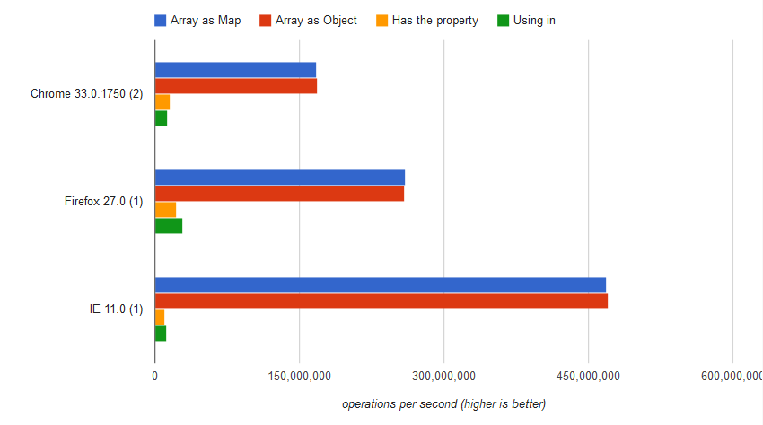

Programming
JAVA
.jpg)
This is generally referred as JVM. Before, we discuss about JVM lets see the phases of program execution. Phases are as follows: we write the program, then we compile the program and at last we run the program. 1) Writing of the program is of course done by java programmer like you and me. 2) Compilation of program is done by javac compiler, javac is the primary java compiler included in java development kit (JDK). It takes java program as input and generates java bytecode as output. 3) In third phase, JVM executes the bytecode generated by compiler. This is called program run phase.
PHP

This is generally referred as JVM. Before, we discuss about JVM lets see the phases of program execution. Phases are as follows: we write the program, then we compile the program and at last we run the program. 1) Writing of the program is of course done by java programmer like you and me. 2) Compilation of program is done by javac compiler, javac is the primary java compiler included in java development kit (JDK). It takes java program as input and generates java bytecode as output. 3) In third phase, JVM executes the bytecode generated by compiler. This is called program run phase.
HTML

This is generally referred as JVM. Before, we discuss about JVM lets see the phases of program execution. Phases are as follows: we write the program, then we compile the program and at last we run the program. 1) Writing of the program is of course done by java programmer like you and me. 2) Compilation of program is done by javac compiler, javac is the primary java compiler included in java development kit (JDK). It takes java program as input and generates java bytecode as output. 3) In third phase, JVM executes the bytecode generated by compiler. This is called program run phase.
CSS

This is generally referred as JVM. Before, we discuss about JVM lets see the phases of program execution. Phases are as follows: we write the program, then we compile the program and at last we run the program. 1) Writing of the program is of course done by java programmer like you and me. 2) Compilation of program is done by javac compiler, javac is the primary java compiler included in java development kit (JDK). It takes java program as input and generates java bytecode as output. 3) In third phase, JVM executes the bytecode generated by compiler. This is called program run phase